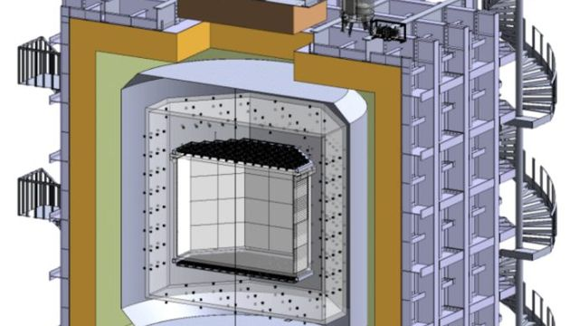
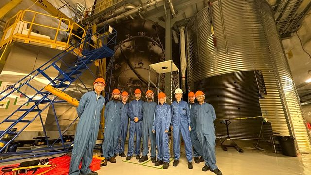
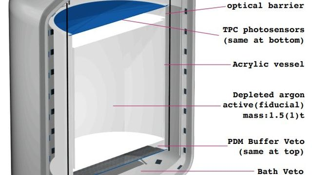

Research
The overarching goal of my research is to uncover the nature of dark matter. I aim to do this with the direct detection technique: Build a detector, stick it underground and thoroughly isolate it from all potential backgrounds, then wait and see if any dark matter particles scatter in the detector and produce a signal.
Dark matter experiments
My dark matter direct detection experiments within the Global Argon Dark Matter Collaboration include

Under constructionDarkSide-20k
A 50 tonne LAr TPC at LNGS, designed to search for dark matter heavier than typical nuclei

2016 to presentDEAP-3600
A 3.3 tonne LAr scintillation counter at SNOLAB in Canada
2013 to 2018DarkSide-50
A 50 kg dual-phase LAr TPC (Time Projection Chamber) at LNGS (Laboratori Nazionali del Gran Sasso) in Italy

FutureDarkSide-LowMass
A 1 tonne-scale LArTPC that will operate as an ionization chamber, optimized for a low-threshold search for light dark matter
As the hunt for dark matter has ruled out more and more candidates, I aim to find new ways of searching for dark matter — either by developing ways of searching for a broader range of candidates with our existing or planned experiments or by developing new ways of searching for it.
Neutrinos
This is where neutrinos come in. Neutrinos are among the oddest particles in the Standard Model. They only exist in the left-handed chirality (or right-handed for anti-neutrinos). They come in three flavors, but as they travel, they oscillate between flavors, since their flavor and mass eigenstates don't line up. They weigh next to nothing, though we know they have a mass. However, we don't know how to explain their mass in the Standard Model. And many things are still unknown about how they interact with the other particles (other than that their interactions are very rare!).
The mysteries surrounding the neutrino make it a potentially promising portal for probing dark matter. Maybe neutrinos get their mass by hiding heavy right-handed neutrinos (left-handed anti-neutrinos) that don't directly interact with other particles. Maybe dark matter has squirreled away in a dark sector, coupled to the Standard Model through an interaction that only the neutrino sees — which is why we haven't seen it yet. These are all questions that can be answered with neutrino experiments.
My neutrino experiments include
At the same time, our large, ultra-low background dark matter detectors can also make powerful neutrino detectors, sensitive to novel channels that might help us better understand the nature of the neutrino or use the neutrino to study nuclear and astrophysics.
My R&D projects are aimed at enabling these goals. Beyond them, I work on a series of dark matter direct detection and neutrino experiments, all built upon liquid argon technology — a powerful and versatile target for studying rare interactions.
See also the dark matter limit plotter and the software tools developed in the lab.